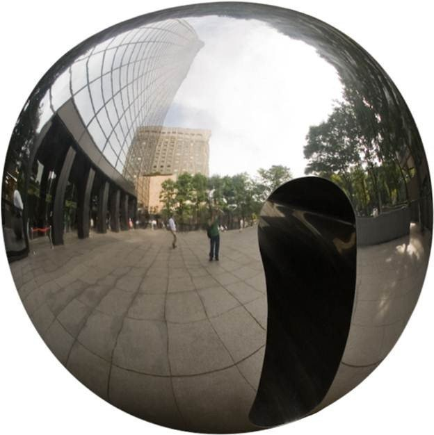
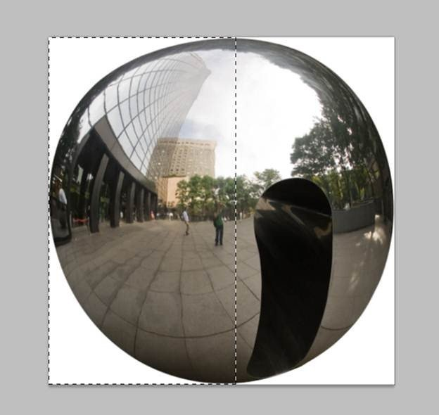

Open file “Metal Ball”. Select the Elliptical Marquee Tool and make a selection of the ball. Hold shift while dragging to keep the selection a perfect circle. After you’ve selected the ball press Ctrl + C to copy and Ctrl + N to create a new document. Photoshop it’s smart enough to calculate the dimensions of the selection and input those variables into document creation window so all you have to do it’s to press Ok. Paste the image (Ctrl + V).
Now we have the ball selected into a new document and the reason for this it is that the door in the middle of the ball kind of ruins the whole aspect of it. We need a nice, round metallic ball and this is the only decent image of a chrome ball I could find, except it has an ugly entrance of some sort that’s ruining its symmetry. Notice that the door it’s mainly in the right half of the image while the left half looks good. The solution to this it is to use the good half to correct the bad one. This technique I am about to use it’s useful when you are retouching or correcting symmetrical objects and it also works great on human faces.
Let’s begin by selecting the Rectangular Marquee Tool and make a selection of the left half of the ball.
